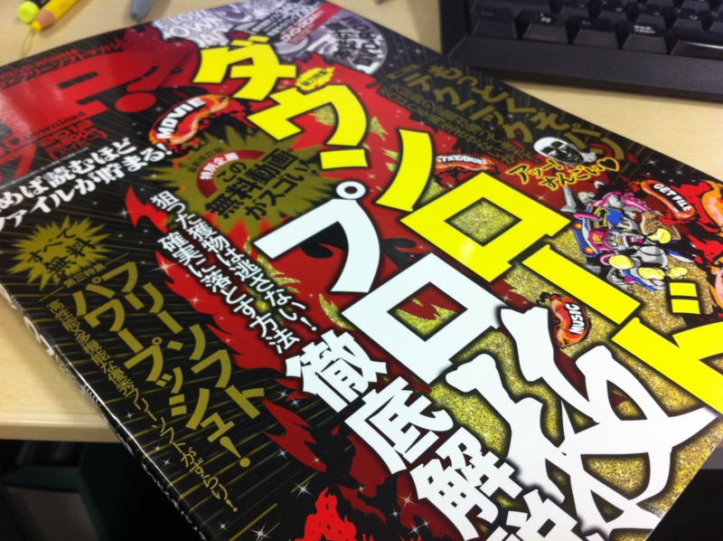

iP! 2012年7月号 に掲載されました。
公開日：

SoundKeyboard 2012 - Daruboard が iP! 2012年7月号 に掲載されました*1。ソフトが雑誌に掲載されて見本誌もらうなんて、何年振りだろう！ 別に買わなくてもいいけど、買ってもいいですよ！ なんかエロい動画のダウンロード方法が書いてありました！
ちなみに、ほんとは 窓の杜 - 【今日のお気に入り】初期状態で「Google Chrome」を起動「すっぽんぽんくろーむ」 が去年の今頃、とある雑誌に収録予定だったのですけど、そっちは東日本大震災のせいか、立ち消えになりました*2*3。まぁ、それはそれで致し方なし。
*1:たぶん、雑誌に掲載されているバージョンより、Webサイトに公開してあるバージョンのほうが新しいです
*2:途中で連絡が途絶えました！
*3:このソフトは「Google Chrome」最新版で必要がなくなりました